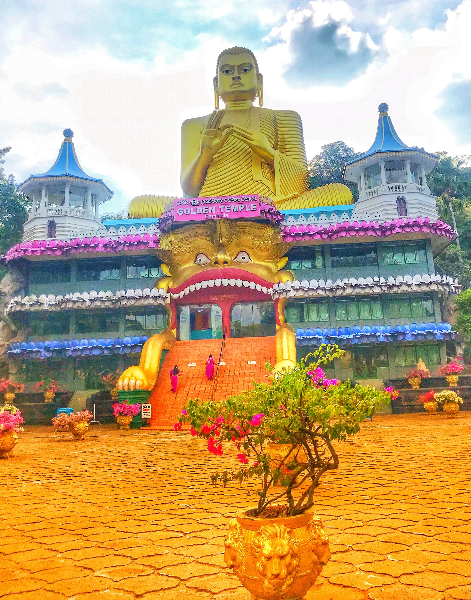

Sri Lanka to super cel podróży dla osób pragnących poznania ciekawej kultury, zobaczenia niezwykłych zwierząt oraz relaksu na plaży
Dambulla cave temple also known as the Golden Temple of Dambulla.Warszawa 28 lutego - wylot.
Na Sri Lanke dotarliśmy 29 lutego o świcie bezpośrednim połączeniem do Colombo, skąd wyruszyliśmy do miejscowości Negombo usytuowanej nad oceanem.
Boeing 787-9 Dreamliner. Taxi from Colombo to Negombo.Negombo
Nad oceanem w Negombo spędziliśmy 2 noce relaksując się na plaży, najadając się tamtejszym jedzeniem oraz zwiedzając okolice.
Negombo harbor. Tsunami damage. Boat trip to negombo lagune. Monkey Island. Palm trees.Zdjęcia powyżej przedstawiają wycieczkę po lagunie w Negombo, na który wybraliśmy się lódką motorową.
Dambulla
Następnym punktem naszej wyprawy była Dambulla, do której dotarliśmy Uberem. Pokonaliśmy 128 km w przeciągu ok. trzech godzin. Na miejscu czekał na nas mały hotel z basenem oraz wiele ciekawych miejsc do zwiedzania.
 Golden Temple. Cave Temple. Cave Temple. Way down from the Cave Temple. Sigiriya Rock.W miejscowości Dumballa spędziliśmy 2 noce w okolicy są trzy podstawowe miejsca do odwiedzenia - Golden Temple, Cave Temple, Sigiriya Rock (ta atrakcja jest dosyć droga, dlatego my podziwialiśmy ją ze szczytu Pidurangala). W okolicy są także parki narodowe, w których występują słonie oraz inne ciekawe okazy zwierząt.
Nuwara Elija i Ella
Po Dumballi przedostaliśmy się samochodem wraz z kierowcą wynajętym z naszego hotelu do miasteczka Nuwara Elija (Nuwara Elija znajduję się przy najwyższym szczycie Sri Lanki), w którym spędziliśmy jedną noc, po czym wyruszyliśmy pociągiem "w chmurach" do miasta Ella.
Central point of Sri Lanka. Nalanda Gedige. Tea planatations. Train to the clouds. Nine Arches Bridge.Yala Nationa Park
W Ella obudziliśmy się o 2:30, by wyruszyć do parku narodowego Yala na poranne safari, gdzie spotkaliśmy wiele egzotycznych zwierząt. Mieliśmy duże szczęście i widzieliśmy rzadko spotykanego geparda.
Off road. Elephant. Bee Eaters teaching their baby. Iguana hunting.Mirissa
Po safari, kierowca zawiózł nas bezpośrendio do Mirissy, która znajduję się nad oceanem. Spędziliśmy tam dwie noce. Mieliśmy czas na odpoczynek, plażowanie, serfowanie oraz zobaczenie pierwszych żółwi :).
 Rock Island
Relax.
Coconut tree hill.
Coconut tree hill 2.0.
Rock Island
Relax.
Coconut tree hill.
Coconut tree hill 2.0.
Hikkaduwa
Ostatnim naszym przystankiem przed odlotem była Hikkaduwa. Raj dla serferów i nurków! Tam zostaliśmy całe 4 dni!
Sea Turtle next to the beach. Trutle Farm. Green Turtle can weight up to 250kg. Light house in Galle.The End
Dziękujęmy za odwiedzenie naszego bloga! Zapraszamy ponownie!
No i koniec normalnie.Created by Maurycy Kasperski. Photographers and directors Irina Mosiychuk Paula LypMan Alexandre Olek Kot